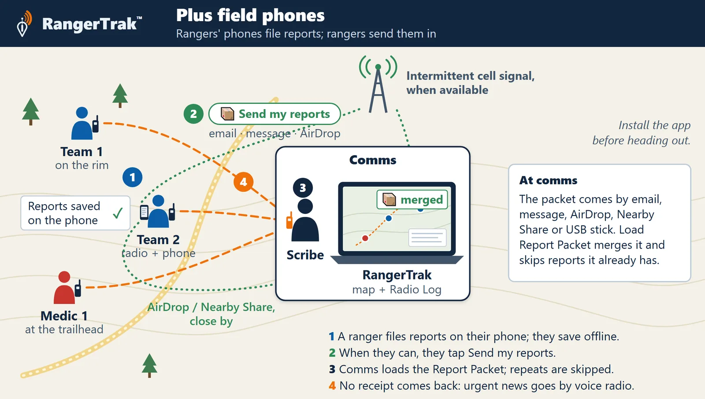
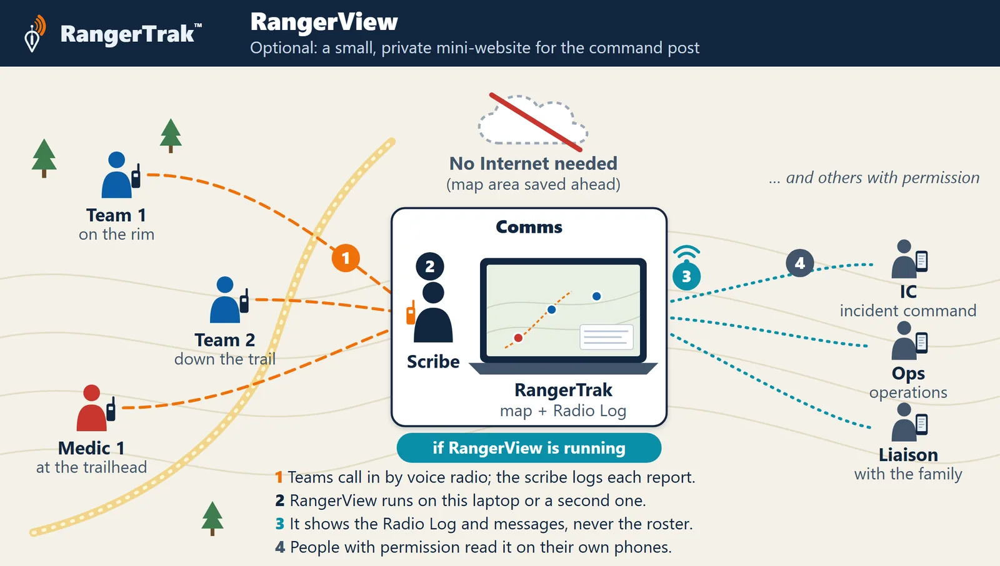

More than one device
One laptop and a radio is the whole basic setup. This page is for when your group wants more: rangers filing reports from their own phones, several scribes at one command post, or the picture on a big screen. All optional, all free, and none of it needs the Internet.
How devices share, today. Each browser keeps its own copy of the mission, and copies don’t sync by themselves. They share by files you send on purpose (a Report Packet, a hand-over file), or by looking (Pop out and RangerView are read-only). Nothing is sent anywhere you didn’t choose, and urgent traffic still goes by voice.
The options


Phones in the field
Field phones
A ranger’s own smartphone can be set up in field mode, to file its own reports: just the entry screen and Help. Reports save on the phone with or without signal, with photos or video if they help. Field mode can be turned off again from Help.
My reports and Send
The phone lists every report as Not sent, Sent or Received. Send N new reports bundles only the ones that haven’t gone into one file, a Report Packet, for email, a text, AirDrop or Nearby Share, with their photos beside it. Until a report is sent you can edit or delete it; after that, radio the correction.
Report Packets at the command post
Load Report Packet on the Radio Log merges a phone’s file in. It only adds reports it doesn’t already have, so a file sent twice does no harm, and it warns if the file is from a different mission. Merged reports are marked. Pick the photos with the packet: each is kept only if its fingerprint matches a report.
Receipts
After a packet merges, Send a receipt makes a small file that lists report numbers and nothing else. Send it back the way the packet came; on the phone, Open a receipt marks those reports Received. Confirmed by radio instead? Mark sent reports received does it by hand. It’s “received, over” for files, not a replacement for it.
Several scribes
At a shift change, or with three or four scribes side by side, each on their own net.
A station letter per device
Give each laptop its own station letter (Mission, Operational period), and its message numbers start with it: B001, C001. Logs from several laptops can then be merged without two reports ever sharing a number. Vashon ACS ran three scribes this way at its November exercise and merged their logs into one.
Hand over to another scribe
Hand over to another scribe, on the Radio Log, saves one file with the people, the places and every entry. The other device merges it in: nothing there is replaced, corrections come across, and merging twice makes no duplicates. Moving to a blank laptop instead? Back up the mission and restore it there.
One 309 per operator
Each scribe prints their own Form 309 Communications Log for their own net, as ICS expects; the communications unit gathers them. The merged log on the main laptop gives the one combined picture and its own 309.


Screens at the command post
The scribe keeps typing; everyone else watches. Every one of these is look-only.
Display
A Display button on the Map, Radio Log, Messages, Rangers & Teams and Summary: bigger type and no editing controls, for a projector or a second monitor. It keeps your filters and warnings, applies to that window only, and Esc comes back.
Pop out, on the same laptop
Pop out, beside Display, opens a look-only copy of that page in its own window: drag it to the big screen, or open several. It keeps up with the scribe by itself and can’t change anything; every look-only window has a colored frame and a “Read-only” label. In Chrome and Edge with two screens it opens on the other one. No server, no second computer.
RangerView (advanced)
For other people’s phones and laptops. RangerView is a mini web server that runs on one laptop at the command post; anyone on the same Wi-Fi can watch the radio log in a web browser, read-only, by scanning its QR code. Give it a password if the Wi-Fi isn’t only yours. Photos go to it only if you switch that on, and the roster never does. It’s for someone comfortable installing software: rangerview.org has the steps.
A Map tab, with each report plotted and colored by status, comes with the beta.4 download. Until then the download is still named for the Board, its old name.
Being worked on
Not built yet. Tell us what your group would use: feedback.
Winlink and FLDIGI Planned
Getting the 309, ICS-213 and other forms out of RangerTrak and into Winlink (including Pat) and FLDIGI, for groups that send their paperwork by radio. Being designed now.
Several scribes, one picture Looking at it
Today several scribes merge by file, every so often, by hand. We’re looking at whether that can be easier when they share one command post’s Wi-Fi, while keeping RangerTrak what it is: one scribe’s tool that works with no network at all.
Individuals and teams We need feedback
The roster holds both people and teams, but in practice the app blends them: a report comes from a call sign, whether that’s one ranger or a team of three. How does your group track who’s out there? Please tell us.
Each of these is explained in the in-app Help, which always matches the app, and in the Field Guide.